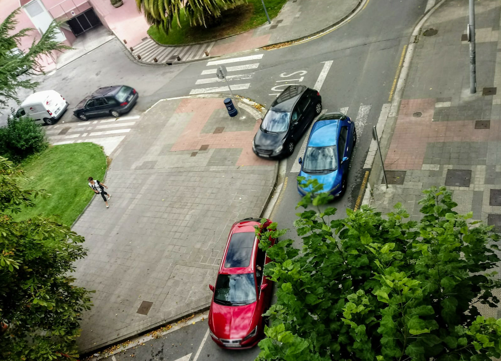

Anbotoko albisteak hauek dira |
|
Azaroaren 30ean izango da Durangoko kontzertua.'Azken Indioak' biraren baitan sei kontzertu iragarri ditu talde gernikarrak, tartean, Plateruenakoa. Sarrerak 17 eurotan erosi ahal dira internet bidez; egunean bertan, sarrerarik egonez gero, 20 euroan erosi ahalko dira kultur gunean bertan. |
| Gaur, 13:20 inguruan, auto batek Gallanda kaleko zebrabidea gurutzatzen zebilen emakumezko bat jo du, Ertzaintzak informatu duenez. Emakumeak hankan hartu du mina, istripua ikusi duen lekuko baten arabera. Anbulantzia eta udaltzaingoa bertaratu dira. |
 |
|